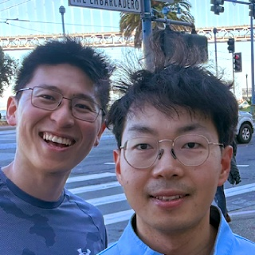

|
Eduardo Figueiredo I'm a PhD candidate at Delft University of Technology advised by Luca Laurenti, working on the robustness of machine learning models. Previously, I worked as a data scientist at Shift Technology and equity researcher at Credit Suisse. I've graduated from University of Sao Paulo and Ecole polytechnique. I am also involved in academic service and community activities. See my pages on Invited Talks, Reviewing, and Teaching. |

|
ResearchI'm interested in robust machine learning, control, and verification. |

 |
Image Generators are Generalist Vision Learners
Valentin Gabeur, Shangbang Long, Songyou Peng, Paul Voigtlaender, Shuyang Sun, Yanan Bao, Karen Truong, Zhicheng Wang, Wenlei Zhou, Jonathan T. Barron, Kyle Genova, Nithish Kannen, Sherry Ben, Yandong Li, Mandy Guo, Suhas Yogin, Yiming Gu, Huizhong Chen, Oliver Wang, Saining Xie, Howard Zhou, Kaiming He, Thomas Funkhouser, Jean-Baptiste Alayrac, Radu Soricut arXiv, 2026 project page / arXiv Reducing monodepth, normals, and semantic segmentation tasks to a single RGB-image-prediction task and fine-tuning an image generator (Nano Banana Pro) beats or ~matches specialized models. |
|
Credits to Jon Barron for this template. |